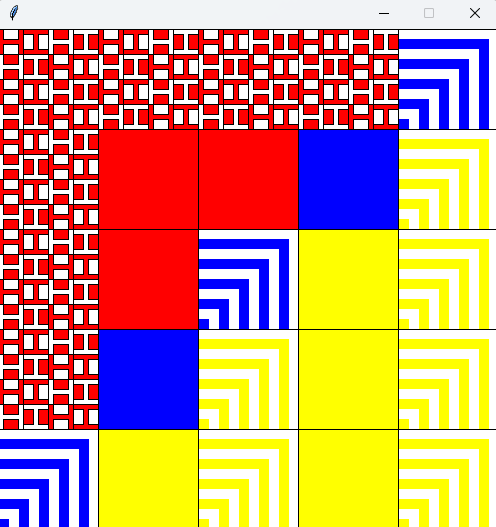

My Projects
Project 1: FitZone Website
A responsive personal portfolio website showcasing my projects and skills.
Project 2: Python Smart Home
This project is a prototype of a Smart Home Application, created as part of a Python assignment. It includes a graphical user interface (GUI) that enables interaction with various smart devices like SmartPlugs and custom smart devices. Users can toggle devices, modify their settings, and manage the smart home environment. Developed using Python and Tkinter, this project showcases fundamental concepts of object-oriented programming and GUI development.

Project 3: Python Patchwork
This project allows users to generate customizable patchworks featuring geometric patterns. Using Python's graphics library, the program creates 5×5, 7×7, or 9×9 grids of patchworks, where the designs and colors are based on user preferences and individual-specific details. The program includes strong input validation and features an interactive mode that enables users to select and modify patches with their mouse and keyboard.
Project 4: Developed ethical route optimization algorithm for self-driving cars.
The goal is to design an algorithm for self-driving cars that balances the shortest route with the safest path for pedestrians and traffic. It will be developed in one fictional town and tested in another. The poster should showcase the algorithm's design, highlighting key insights with clear visuals and concise content.